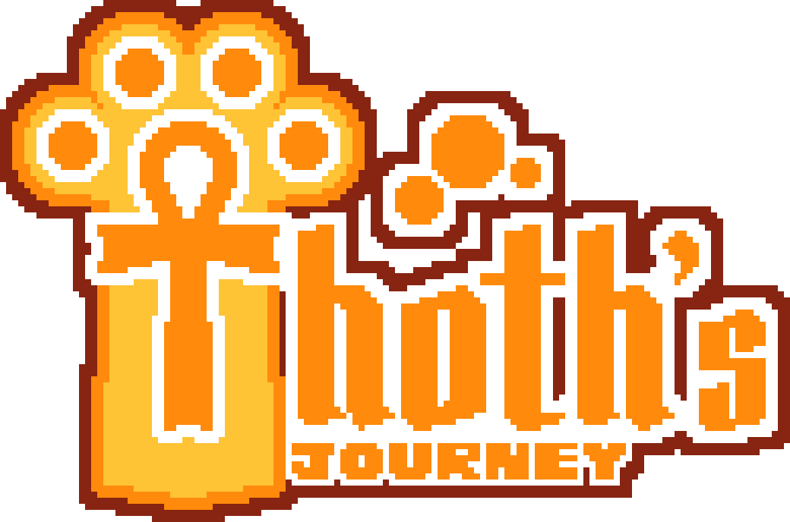
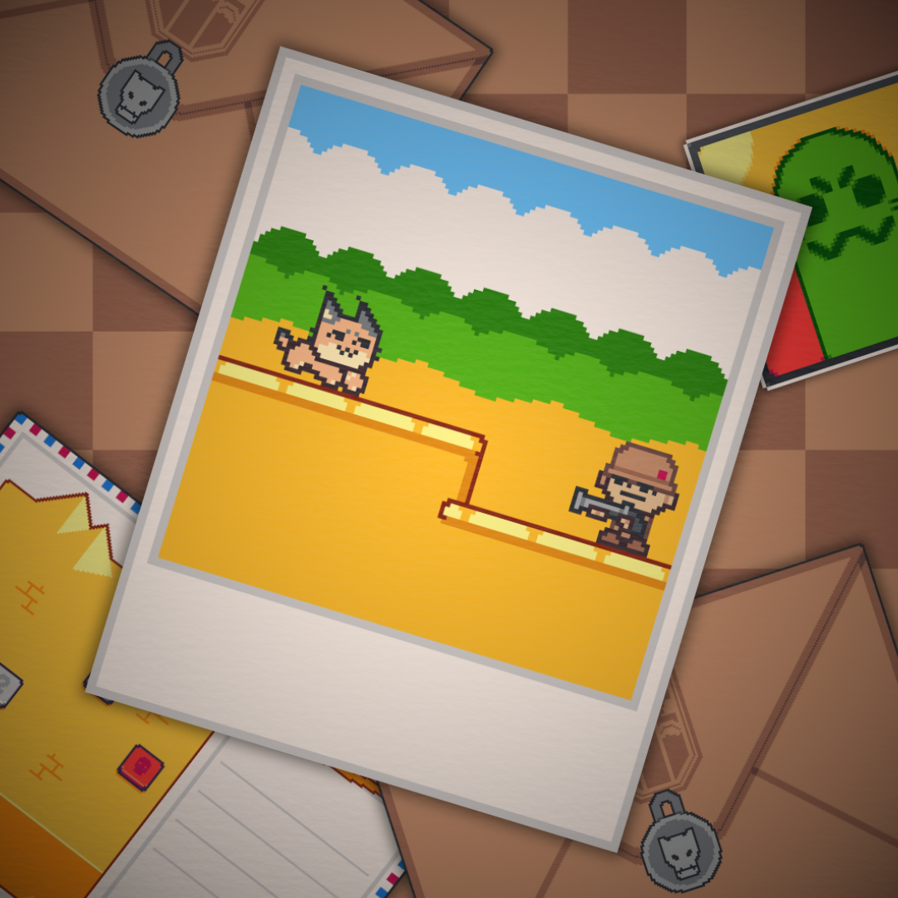

Acadêmico!
Nessa página, iremos explorar os principais projetos de cada ano até agora em que estudei na ETEC...
1°ANO
-
Projeto do jogo: Thoth's Journey
Esse foi o nosso maior projeto até agora, um jogo que envolvia quase todas as diciplinas do técnico como PW1, APS, DD, PA, etc. Ele durou o ano todo e foi praticamente o único.
O nosso jogo Thoth's Journey contava a história de um gato que lutava contra caçadores ilegais e libertava diferentes animais. Nós fizemos desde o storyboard até o design de todos os níveis até a divulgação.

Logo desenhada por mim.
Ele é um jogo estilo plataforma como o Mario, com alguns bosses e diferentes inimigos, além de cenários inspirados em paisagens das diferentes partes do continente africano (Onde o jogo se passa).
A equipe era composta por quatro membros, sendo eu um dos desenvolvedores. Aplicamos conceitos que viriam ser importantissemos para nós agora no TCC do Scrum, e colocar tudo que viamos em prática na hora no jogo ajudou muito a pegar o ritimo.

Thoth e o caçador.
Usamos as seguintes ferramentas: Game Maker, Aseprite, Libresprite, Trello, Canva, Instagram (Divulgação), Bandlab (Músicas), etc.